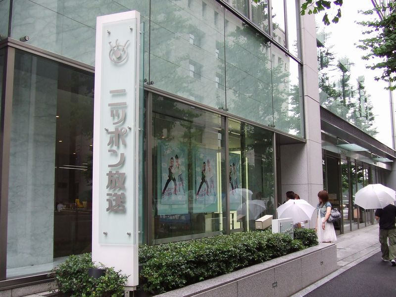
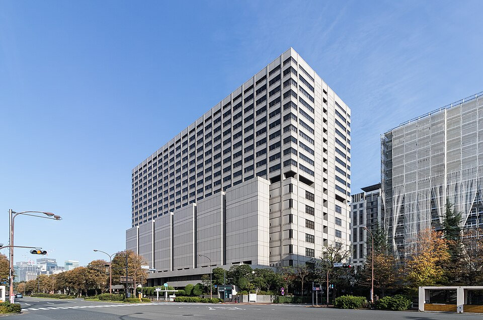
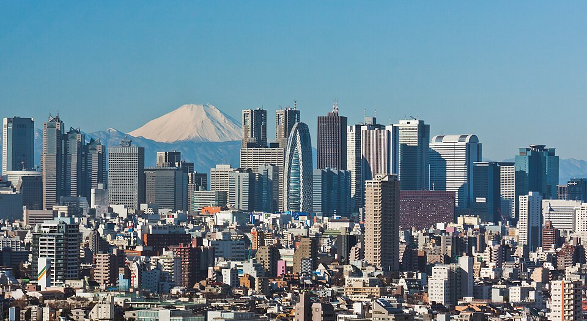
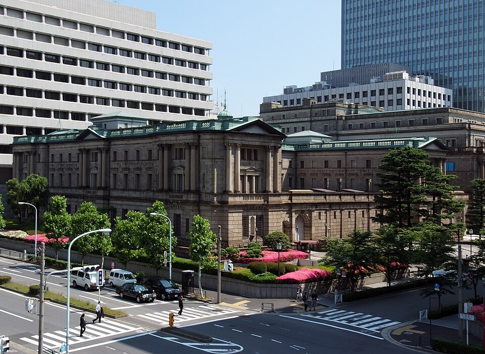

.jpg){kind=link}


村上世彰
むらかみ・よしあき
M&Aコンサルティング・MAC社代表
役割：重要事実を知り株式を買い付けた中心人物
その後：懲役2年・執行猶予3年、罰金300万円、追徴金11億4900万6326円7
1999〜2011年
村上世彰は企業統治改革と株主価値向上を掲げてM&Aコンサルティングとファンドを設立し、ニッポン放送株を取得した。1
ライブドアの堀江貴文・宮内亮治らから公表前の大量取得方針を伝えられた後、MACアセットマネジメントは193万3100株を99億5216万2084円で買い付けたと裁判所が認定した。2
東京地裁は村上世彰とMAC社に有罪判決を言い渡し、東京高裁は村上の懲役刑に執行猶予を付した。福井俊彦日銀総裁の出資と利益も国会で問題となった。3

村上世彰は通商産業省を退官後、1999年7月にM&Aコンサルティングを設立した。株式持合いの解消、資本効率の改善、株主価値の向上を掲げ。企業の株式を取得して経営改善を促す投資活動を始めた。2000年1月には昭栄にTOBを実施したが失敗し、2002年5月には東京スタイルに株主提案権を行使した。村上の活動は、経営者と株主の関係を問い直す投資家として注目されるようになった。1
９月15日というのは、村上被告が堀江及び宮内被告と、ニッポン放送の株をめぐって最初に会合を持った日であります。このときには、村上被告が、ニッポン放送株を３分の１取得すれば、村上ファンドは今18％持っているので、ほぼ過半数とれる、だからニッポン放送の経営権を握れますよというプレゼンをしたというように認定をされています。 これに対して、堀江被告が、「フジテレビいいですね」「おもしろそうですね。やってみたいですね」「ぜひやらしてください」というところから、本件がスタートしたということになっています。
意味：村上側の買収構想と、堀江側の関心が接続した場面である。[同PDF]
1999年秋、当時富士通総研理事長だった福井俊彦は、村上のコーポレートガバナンス改革への志を激励する意味で。村上ファンド内の投資事業組合に1000万円を拠出した。福井は2003年3月に日本銀行総裁へ就任した後も出資を続け、2005年末にはファンド残高が2231万円となった。分配金242万円と運用益1231万円を合わせた累積利益1473万円が国会提出資料で明らかになり、中央銀行総裁の資産管理と利益相反が問題となった。24
村上ファンドは、ニッポン放送がフジテレビ株を大量保有する一方で、フジテレビがニッポン放送株を保有する資本関係に着目した。2003年からニッポン放送株を本格取得し、2004年にはMAC社が集中的に買い増した。村上側は企業価値向上や資本関係の見直しを求め、フジテレビ側は経営権の確保を進めた。日枝久はフジテレビ会長としてこの争いの当事者となった。35
2004年11月8日ころ、ライブドアの堀江貴文と宮内亮治らは、村上側にニッポン放送株を5％以上取得する方針を伝えたと認定された。原文資料では、9月15日の会合で村上が3分の1取得による経営権構想を示し、11月8日の会合ではTOBの方法や買収後の子会社の分担まで話し合われたとされる。東京地裁は、単なる希望や雑談ではなく、公開買付け等の実施に関する決定に当たる重要事実だったと判断した。67
判決においては、11月８日の会合の席上で、ニッポン放送株の取得の方法としてＴＯＢという方法はできるだろうかとか、ニッポン放送の経営権を取得した後、ポニーキャニオンとフジテレビはライブドアで、サンケイビルのほうは村上ファンドでというような子会社の山分け的な話もしている、十分に具体性のある話し合いがなされたということから、実際に大量買い集めすることの決定があったことの伝達がなされたと認定しております。 （中略） この後、村上ファンドは、決定の伝達を受けた翌日の11月９日から、公表日である２月８日までに、193万株を総額約100億円で買い付けたということが認定されているわけであります。
意味：裁判所が「雑談」ではなく、具体的な買付決定の伝達と買付行為を結び付けた経緯を示す。[同PDF]
MAC社は方針を伝えられた翌日の2004年11月9日から2005年1月26日まで、ニッポン放送株193万3100株を99億5216万2084円で買い付けた。ライブドアは2005年2月8日にToSTNeT-1を利用して約972万株を取得し、保有比率を35％に引き上げた。約800億円のMSCBをリーマン・ブラザーズが引き受け、買収資金を供給した。村上ファンドは大量取得公表後に株式を売却し、2月末時点の保有比率は3.44％まで低下したとの報道がある。638
2006年1月にライブドア事件で堀江貴文らが逮捕され、捜査の過程で村上ファンドが公表前の取得方針を知っていた疑いが浮上した。6月5日、東京地検特捜部と証券取引等監視委員会は村上世彰を逮捕し、6月23日に村上世彰とMAC社を起訴した。福井は2月に解約を申し込み、6月末に解約が実行されたと説明した。6月16日と22日の国会では、日銀総裁就任後も出資を続けた判断と、日銀への信頼への影響が追及された。9102
○福井参考人 おはようございます。日本銀行の福井でございます。 本日の質疑に先立ちまして、まず、私の村上ファンドに対する資金拠出の件で、皆様方初め国民の皆様、広く御迷惑をおかけしております。この場をかりまして深くおわびを申し上げます。 この件は、九〇年代、特に後半、社会全体に閉塞感が漂っておりましたときに、村上氏がみずからの職をなげうって、日本のコーポレートガバナンスを変革したいと強い意欲を示されまして、その志を激励する意味で、当時の私の職場の同僚、有志の方々とともに資金を拠出し、激励の意味を込めたものでございます。 結果として、この資金をめぐり、世の中をお騒がせすると申しますか、大変御迷惑をおかけする結果になりまして、この点、本当に申しわけなく思っております。
意味：福井氏は出資を「志への賛同」と説明しつつ、国民への謝罪を冒頭で述べた。[同会議録]
2007年7月19日、東京地裁は村上世彰に懲役2年、罰金300万円、追徴金11億4900万6326円。MAC社に罰金3億円を言い渡した。東京地裁は、ライブドアが大量取得を決定したと村上が認識し、その情報を利用して買い付けたと認定した。2009年2月3日、東京高裁は村上に懲役2年・執行猶予3年、罰金300万円、追徴金11億4900万6326円。MAC社に罰金2億円を言い渡した。最高裁の決定日は金融庁関係者の解説で2011年6月6日と引用されているが、判決本文の掲載URLは未確認である。7611
村上ファンドに関しましては、個別の案件ではございますけれども、証券市場において、その正常な運用と投資家が自己責任に基づいて投資行動をすることの前提となります適正なディスクロージャーと公正な取引、この公正な取引という部分において問題が生じたということで大変残念なことに思っております。証券取引等監視委員会が東京地検と合同で強制捜査に入っていると聞いておりますので、証券取引等監視委員会がその任務を万全に果たしてくれることを期待したいと思います。 （中略） 今回の事件そのものは、捜査の途上ということですからその内容を詳しく引用するわけにはいかない、そうした情報もないわけですが、伺うところによりますればこれは証券取引法第167条違反のインサイダー取引という疑いであるということのようでございます。これは証券取引における取引の公正を確保するという点から設けられております禁止行為、それも罰則の付いた犯罪ということで設けられている行為であり、かつその構成要件というのは本人の意図などを問題としない極めて明確なものであります。従って、このような事件が起こったということは、そのことをもって何か証券行政のあり方、或いはルールの作り方に問題があるというよりも、元々してはならないことをしたということでありますから、今後もこうしたことが起きれば厳正に対応するということに尽きるのだろうと思います。
意味：金融庁トップが、事件を市場の公正・開示の問題として明確に位置づけた。[同会見]
2006年6月に金融商品取引法案と証券取引法等改正法が成立した。金融庁はファンド全般を規制対象とし、大量保有報告制度の報告期限・頻度を短縮し、市場内外の取引を組み合わせて3分の1を超える急速な買付けを公開買付け規制の対象とする制度を説明した。日銀は役員の金融取引ルール見直しのため特別検討会議を設置した。MAC社は2006年5月に廃業届を提出し、同年11月に村上ファンドは六本木ヒルズから完全撤退した。121314
村上ファンドの活動は、企業の資本効率や株主価値を問う投資として評価される一方、公開前の取得方針を利用した取引として刑事責任が判断された。裁判で焦点になったのは、ライブドアが必要な資金を調達できるか、MSCBの仕組みが存在していたかという実現可能性だけではなかった。堀江・宮内・村上の会合で、取得方法や買収後の子会社の分担が具体的に話し合われたこと、村上側が翌日から193万3100株を買い付けたことが。重要事実の認識と利用を考える材料になった。高裁は、村上ファンドの企業活動全体を量刑上過度に重く評価できないとして執行猶予を付したが、買付けの刑事責任と企業統治への評価は別の論点として残った。76
福井は出資を村上の志への賛同と説明し、日銀の内部ルール上は問題のある取り扱いではないと述べた。その一方で、日銀総裁就任時により慎重に判断できたかもしれないとして謝罪し、元本1000万円を含む資金を自身の利益に使わない意向を示した。オリックスによる出資・役員派遣は報道として記録されているが、本事件の判決上の中心人物ではない。暴力団、総会屋、仕手筋、政治家の資金関係、海外口座・タックスヘイブンについては。確認した判決・監視委資料・国会資料に具体的な公的認定がない。最高裁判決本文、監視委員会の指定PDF、当事者の社内文書や手記も本調査では確認できなかった。131415
取引の各段階では、村上ファンドの出資者、福井俊彦、ライブドア、リーマン・ブラザーズ、ニッポン放送株主。国庫が異なる位置にあった。福井の出資は1000万円で、2005年末の残高は2231万円、累積利益は1473万円だった。ライブドアは約800億円のMSCBを発行し、ニッポン放送株の保有比率を35％にした。村上側の買付額は99億5216万2084円で、判決後には村上個人の追徴金とMAC社の罰金が国庫に納付されることになった。調査メモでは出資者ごとの利益、個別株主の損益、従業員・取引先の損失額は確認されていない。したがって、確認できる金額と確認できない金額を分けて記載した。確認範囲を明示した。436
調査メモで確認できた範囲を明示した。




| M&Aコンサルティング・MAC関連拠点（六本木ヒルズ） | 東京都港区六本木6-10-1 | 村上ファンド関係会社の拠点 | 20 |
| 旧ニッポン放送本社 | 東京都千代田区有楽町1-9-3 | 買収対象企業の旧本社 | 21 |
| 東京証券取引所 | 東京都中央区日本橋兜町2-1 | 村上が逮捕前会見を行った場所 | 22 |
| 東京地方裁判所 | 東京都千代田区霞が関1-1-4 | 一審判決の裁判所 | 23 |
| 東京高等裁判所 | 東京都千代田区霞が関1-1-1 | 控訴審判決の裁判所 | 24 |
| 最高裁判所 | 東京都千代田区隼町4-2 | 上告審の裁判所 | 25 |
| 日本銀行本店 | 東京都中央区日本橋本石町2-1-1 | 福井俊彦が総裁を務めた場所 | 26 |
| 金融庁 | 東京都千代田区霞が関3-2-1 | ファンド規制・市場監視を所管 | 27 |
ライブドア側から大量取得方針を伝えられた後、村上ファンドは公表前にニッポン放送株を買い付けた。ライブドアはMSCBで資金を調達して株式を取得し、村上側は公表後に売却した。63
むらかみ・よしあき
M&Aコンサルティング・MAC社代表
役割：重要事実を知り株式を買い付けた中心人物
その後：懲役2年・執行猶予3年、罰金300万円、追徴金11億4900万6326円7
ほりえ・たかふみ
ライブドア社長
役割：大量取得方針を村上側に伝えた人物の一人と認定
その後：別件の刑事責任は本事件の判決対象外6
みやうち・りょうじ
ライブドア取締役
役割：大量取得方針を伝えた幹部と認定
その後：本事件の判決対象外6
ふくい・としひこ
日本銀行総裁
役割：村上ファンドに1000万円を出資
その後：国会で謝罪・説明。刑事処分なし2
みやうち・よしひこ
オリックス会長・CEO
役割：オリックスによるMAC社関連会社への出資・役員派遣が報じられた
その後：本事件の刑事処分は未確認14
ひえだ・ひさし
フジテレビ会長
役割：ニッポン放送をめぐる経営権争いの当事者
その後：本事件の刑事処分は未確認5
むらかみ・あや
村上世彰の娘
役割：後年の村上系投資活動に関与したが中心人物ではない
その後：2006年事件の刑事責任は未確認28
リーマン・ブラザーズ関係者
役割：ライブドアの資金調達に関与したと報じられた
その後：事件での刑事責任は未確認3
やました・たかし
検察官
役割：村上事件の検察官として判決資料に記載
その後：本事件の処分は未確認7
こま・くにひこ
東京地裁一審裁判長
役割：一審判決を担当
その後：本事件の処分は未確認6
かどの・ひろし
東京高裁控訴審裁判長
役割：控訴審判決を担当
その後：本事件の処分は未確認6
よさの・かおる
金融担当大臣
役割：金融商品取引法・ファンド規制を説明
その後：本事件の処分は未確認29
ごみ・ひろふみ
金融庁長官
役割：市場の公正・開示の問題として説明
その後：本事件の処分は未確認9
証券取引等監視委員会委員長
役割：東京地検との共同調査・告発を説明
その後：本事件の処分は未確認30
かわきた・ひでたか
研究者・元金融機関関係者
役割：村上世彰と企業統治・株式持合いについて意見交換
その後：本事件の処分は未確認1
相関図は、買付方針を伝えたライブドア、買付けを担った村上ファンド、資金提供・買収競争の関係者。捜査・裁判・制度対応を示す。闇の人脈に関する線は、認定、報道。未確認を区別する。
庇護・口利きではなく「志への賛同と資金の出し手と受け手」。福井は村上の企業統治改革への志を激励する目的で1000万円を拠出したと説明した。日銀総裁就任後も出資が続き、中央銀行総裁としての利益相反が問題化した。衆議院2
資金の出し手と受け手・対立。堀江側が大量取得方針を伝え、村上側が株式を買い付けたと裁判所が認定した。後に両者はライブドア事件・村上事件で別々に刑事責任を問われた。新日本法規6
上司と部下ではなく取引相手。宮内はライブドア幹部として情報伝達側、村上はファンド側として買付け側にいた。新日本法規6
盟友・上司と部下。両者はライブドア経営陣としてニッポン放送株取得を進めた。新日本法規6
資金の出し手と受け手。オリックスはMACアセットマネジメントに資本参加し、非常勤役員を派遣したと報じられた。日本共産党機関紙14
師弟・知的影響。村上は川北の株式持合い研究を読み、企業統治について意見交換を申し入れた。国立国会図書館資料1
対立・確執。村上側はニッポン放送株の価値向上を主張し、フジテレビ側は支配権確保を進めた。ITmedia5
対立・買収競争。ライブドアはニッポン放送株を35％まで取得し、フジテレビのTOBと競合した。ITmedia5
対立・捜査。村上は逮捕・起訴され、検察は重要事実の認識と利用を立証した。金融庁9
対立・告発。監視委は東京地検と共同で事件を調査・告発した。証券取引等監視委員会30
上司と部下・組織統治。福井の個人投資が日銀の信頼性と独立性を損なう可能性が国会で議論された。衆議院2
上司と部下。日銀は役員の金融取引ルール見直しのため特別検討会議を設置した。衆議院13
資金の出し手と受け手。リーマンは約800億円のMSCBを引き受け、買収資金を供給した。国立国会図書館資料3
盟友・元部下との取引関係。青山のファンドがニッポン放送株を取得する計画を持っていたが、資金手当ての変更が報じられた。ITmedia18
姻戚・血縁。娘の絢は後年の村上系投資活動に関与したが、2006年事件での刑事責任は未確認。Commonsカテゴリ28
この会議には、堀江、宮内、村上という各被告が出席しているわけですが、そこでは、ニッポン放送株取得の方法として、ＴＯＢというのは可能であるかということや、ニッポン放送の経営権を取得した後、その子会社の経営を、村上ファンドとライブドアとでどのように分担するか。具体的には、この席上では、堀江被告のほうが、フジテレビとポニーキャニオンを自分はやりたいと。村上被告のほうは、不動産を持っているから、自分はサンケイビルをやりたいというようなことを話し合ったということが認定されています。 それから、この席上で、ライブドアの方からは、村上ファンドが18％持っているということを前提に、３分の１はライブドアの方で取得するということを考えるけれども、村上ファンドが売ってしまうと経営権がとれなくなってしまうので、村上ファンドは引き続き18％を保有し続けてほしい。それを約束して書面にできないかということを、宮内被告が村上被告に伝えています。 結果的に、これは村上被告の側から、そんな約束はできないといって蹴られているわけですが、こういう話し合いがなされたと認定されています。
意味：買収後の支配・資産分配まで話題になった一方、村上側は保有継続を約束しなかった。[同PDF]
公的資料で確認できる中心は、ファンド出資、ライブドアの資金調達。日銀総裁の出資である。暴力団、総会屋、仕手筋、政治家の資金関係、海外口座・タックスヘイブンは。本調査では公的認定を確認できない。オリックスの出資・役員派遣とリーマンの資金供給は報道・資料上の記載として扱う。
暴力団組織名・人物 確認できない
総会屋 確認できない
仕手筋 確認できない
政治家・政治団体 確認できない
福井俊彦・村上ファンド 認定
オリックス・MACアセットマネジメント 報道
リーマン・ブラザーズ・ライブドア 確認できない
村上ファンド関係法人 確認できない
ファンド規制に関しましては、これは一般論でお答えを申し上げますけれども、現在国会で審議をいただいております金融商品取引法の中に、投資家或いは利用者を保護する観点から、幾つかの措置を講ずることにしております。第一に、新たに包括的な定義を設けてファンド全般を規制の対象とする。第二に、大量保有報告制度について、機関投資家に認められます特例報告の報告期限・頻度を短縮する。同時に報告書の電子提出を義務付けまして、電子開示手続きを通じた公衆縦覧を行う。第三に、公開買付規制におきまして、脱法的な態様の取引に対応するために、市場内外における買付等の取引を組み合わせた急速な買付の後、所有割合が３分の１を超えたような場合、公開買付規制の対象となることを明確にする。（中略）こうした措置を通じまして、ファンドの活動の公正性・透明性を確保して、投資家保護に万全を期したいと存じます。
意味：当局が想定した制度対応には、ファンド規制や大量保有報告と公開買付規制の見直しが含まれていた。[同会見]
| 東京地裁 | 2007-07-19 | 懲役2年、罰金300万円、追徴金11億4900万6326円 |
| 東京高裁 | 2009-02-03 | 懲役2年・執行猶予3年、罰金300万円。追徴金11億4900万6326円 |
証券取引法違反。確定（最高裁決定日は2011年6月6日とする公的解説。判決本文は未確認）7611
| 東京地裁 | 2007-07-19 | 罰金3億円 |
| 東京高裁 | 2009-02-03 | 罰金2億円 |
| 日銀特別検討会議 | 2006年 | 役員の金融取引ルール見直しを検討 |
役員の金融取引管理。確認13
| MAC社 | 2006年5月 | 廃業届を提出 |
廃業。確認14
９月15日というのは、村上被告が堀江及び宮内被告と、ニッポン放送の株をめぐって最初に会合を持った日であります。このときには、村上被告が、ニッポン放送株を３分の１取得すれば、村上ファンドは今18％持っているので、ほぼ過半数とれる、だからニッポン放送の経営権を握れますよというプレゼンをしたというように認定をされています。 これに対して、堀江被告が、「フジテレビいいですね」「おもしろそうですね。やってみたいですね」「ぜひやらしてください」というところから、本件がスタートしたということになっています。
意味：村上側の買収構想と、堀江側の関心が接続した場面である。[同PDF]
この会議には、堀江、宮内、村上という各被告が出席しているわけですが、そこでは、ニッポン放送株取得の方法として、ＴＯＢというのは可能であるかということや、ニッポン放送の経営権を取得した後、その子会社の経営を、村上ファンドとライブドアとでどのように分担するか。具体的には、この席上では、堀江被告のほうが、フジテレビとポニーキャニオンを自分はやりたいと。村上被告のほうは、不動産を持っているから、自分はサンケイビルをやりたいというようなことを話し合ったということが認定されています。 それから、この席上で、ライブドアの方からは、村上ファンドが18％持っているということを前提に、３分の１はライブドアの方で取得するということを考えるけれども、村上ファンドが売ってしまうと経営権がとれなくなってしまうので、村上ファンドは引き続き18％を保有し続けてほしい。それを約束して書面にできないかということを、宮内被告が村上被告に伝えています。 結果的に、これは村上被告の側から、そんな約束はできないといって蹴られているわけですが、こういう話し合いがなされたと認定されています。
意味：買収後の支配・資産分配まで話題になった一方、村上側は保有継続を約束しなかった。[同PDF]
判決においては、11月８日の会合の席上で、ニッポン放送株の取得の方法としてＴＯＢという方法はできるだろうかとか、ニッポン放送の経営権を取得した後、ポニーキャニオンとフジテレビはライブドアで、サンケイビルのほうは村上ファンドでというような子会社の山分け的な話もしている、十分に具体性のある話し合いがなされたということから、実際に大量買い集めすることの決定があったことの伝達がなされたと認定しております。 （中略） この後、村上ファンドは、決定の伝達を受けた翌日の11月９日から、公表日である２月８日までに、193万株を総額約100億円で買い付けたということが認定されているわけであります。
意味：裁判所が「雑談」ではなく、具体的な買付決定の伝達と買付行為を結び付けた経緯を示す。[同PDF]
「決定」の意義に関して、本件で特に今問題とされておりましたのが、およそ実現可能性が極めて低い段階での決定は167条２項所定の「決定」に当たるか、という点でした。先ほど申し上げたとおり、本件では、９月15日の会議とその直後の部分を全体として見て、そこでライブドアにおいて決定がされたという認定がされています。この時点においては、実際にライブドアが必要な資金調達をできるかどうかというのも必ずしも定かではありませんし、ましていわんやＭＳＣＢを使った資金調達スキームというのは、まだ影も形もなかった訳です。即ち、この時点では実現可能性がそれほど高いわけではないと思われていたわけですが、そのような状況においても「決定」があったと認定することができるかというのが大きな争点となりました。この点に関しては、新聞報道等で、宮内被告が、ニッポン放送株の買い集めは、成功するかどうか10万馬券を買うようなものだということを公判で証言していたということは耳にされたことがあると思います。
意味：本件の核心である「どの程度の確実性で重要事実になるか」という争点を示す。[同PDF]
○福井参考人 おはようございます。日本銀行の福井でございます。 本日の質疑に先立ちまして、まず、私の村上ファンドに対する資金拠出の件で、皆様方初め国民の皆様、広く御迷惑をおかけしております。この場をかりまして深くおわびを申し上げます。 この件は、九〇年代、特に後半、社会全体に閉塞感が漂っておりましたときに、村上氏がみずからの職をなげうって、日本のコーポレートガバナンスを変革したいと強い意欲を示されまして、その志を激励する意味で、当時の私の職場の同僚、有志の方々とともに資金を拠出し、激励の意味を込めたものでございます。 結果として、この資金をめぐり、世の中をお騒がせすると申しますか、大変御迷惑をおかけする結果になりまして、この点、本当に申しわけなく思っております。
意味：福井氏は出資を「志への賛同」と説明しつつ、国民への謝罪を冒頭で述べた。[同会議録]
○松本（洋）委員 しっかりと、信頼を得られるように対応を御自身されていくということでございますけれども、今回の件を通しまして、国民の皆さんからは大変な不信の声がやはり上がっている、そういう現実はあるわけでございまして、総裁といたしましてその点をしっかりと受けとめていただきまして、国民の皆さんからきちんとした信頼が得られるようにしていただきたい、そのように強く希望を申し上げます。 （中略） ○福井参考人 日本銀行で職責を仰せつかっております立場からは、職務の公正性の確保という点は極めて重要だというふうに常々認識しております。そういうふうに行動してきているつもりでございますが、今後一層、みずから規律を強めるという方向で努力してまいりたい。
意味：国会側が問題を個人投資だけでなく、日銀への信頼・職務の公正性の問題として追及した。[同会議録]
○福井参考人 村上ファンドへの資金の拠出をめぐりましては、日本銀行の総裁に就任いたします際にどうして取りやめなかったのかという強い御批判を数多くちょうだいいたしております。既に申し上げましたとおり、拠出を続けたこと自体は、日本銀行のコンプライアンスルールとの関係で、問題のある取り扱いではございません。しかしながら、結果として世の中を大きくお騒がせすることになってしまいました。大変残念かつ申しわけなく思っております。 今振り返ってみますと、内部ルールとは別に、就任の際に、中央銀行総裁としてこの拠出を続けることについて、より慎重に判断できなかったか、より慎重に判断していれば異なる結論に至ったかもしれないというふうに思われます。 この資金拠出については、既に解約を申し出ておりまして、当月末、間もなく資金化されるはずでございます。私といたしましては、資金拠出に関する最終処理として、そのすべて、元金一千万円も含めたすべての資金について、私の利益のためには使わない、慈善団体への寄附など、どなたからごらんいただきましても納得のいく使い道に振り向けたいと考えております。
意味：形式的な規則違反を否定しながら、総裁就任時の判断の慎重さには問題があったと認めた。[同会議録]
○石原（宏）委員 多くの国民は、ゼロ金利政策を強いてきた日銀の総裁が、一般の方々がなかなか参加することができない村上ファンドへの投資によって、この約一七％から一八％の年利で運用を行ってきたことに、私は強く怒りを感じていると思います。また、それは一般的な国民の感情ではないかと思います。 （中略） ○福井参考人 先ほど、冒頭のごあいさつでも申し上げましたとおり、結果として、委員御指摘のとおり、非常に高い利回りのファンドということに今の姿としてなっております。振り返って、日本銀行総裁が高利の利殖に走ったのではないかと大変厳しい御批判をいただいておりまして、私としては、もっともな御批判ということで、それは深く反省いたしております。 そのことを申し上げました上で、村上ファンドの投資でございますが、私の当初からの理解は、彼の志のとおり、コーポレートガバナンスを前進させるという太い軸を通しながら投資活動をするということであれば、（中略）結果として、企業価値が高まればリターンも高まる、こういうふうな関係だと理解しておりました。
意味：国会では、出資の理念と実際の高利回り・利殖性との乖離が正面から問われた。[同会議録]
○古本委員 要するに、お互いに恩義を感じ合っていた仲であれば、そこで一千万を拠出する相当な根拠がないと出さなかったと思うんですね。これは総裁の心の中に入りますから。これは、明らかに利殖行為で、もうけ話だからそれに乗っかったんですよと国民が誤解しても、弁明できません。 （中略） ○福井参考人 ちょっと聞き違えておればお許しいただきたいんですが、日本銀行総裁になる前の民間時代の話でございます、アドバイスの話は。しかも、それはコーポレートガバナンスに関する大所高所のアドバイスであって、ファンドの運用とかマネジメントというふうなことは、私のキャパシティーからはできることではありませんので、そういうことは一切いたしておりません。 （中略） ○福井参考人 しかし、一般報道ベース等で村上氏の行動を見ている限り、当初の彼の志どおり彼は行動しているかどうか、時の経過とともに私の心の中に疑念が蓄積してきたということは事実です。
意味：村上氏との人的な近さをめぐる追及に対し、福井氏は助言関係と投資運用への関与を区別して答弁した。[同会議録]
村上ファンドに関しましては、個別の案件ではございますけれども、証券市場において、その正常な運用と投資家が自己責任に基づいて投資行動をすることの前提となります適正なディスクロージャーと公正な取引、この公正な取引という部分において問題が生じたということで大変残念なことに思っております。証券取引等監視委員会が東京地検と合同で強制捜査に入っていると聞いておりますので、証券取引等監視委員会がその任務を万全に果たしてくれることを期待したいと思います。 （中略） 今回の事件そのものは、捜査の途上ということですからその内容を詳しく引用するわけにはいかない、そうした情報もないわけですが、伺うところによりますればこれは証券取引法第167条違反のインサイダー取引という疑いであるということのようでございます。これは証券取引における取引の公正を確保するという点から設けられております禁止行為、それも罰則の付いた犯罪ということで設けられている行為であり、かつその構成要件というのは本人の意図などを問題としない極めて明確なものであります。従って、このような事件が起こったということは、そのことをもって何か証券行政のあり方、或いはルールの作り方に問題があるというよりも、元々してはならないことをしたということでありますから、今後もこうしたことが起きれば厳正に対応するということに尽きるのだろうと思います。
意味：金融庁トップが、事件を市場の公正・開示の問題として明確に位置づけた。[同会見]
○佐渡新委員長 犯則調査事件の最近の状況を私なりに考えていることを申し上げますと、近年当委員会が告発する事件は、大型で複雑困難な案件が多く、積極果敢に取り組んでいると思いますが、中でも東京地検と協同で強制調査し、告発にいたったライブドア、村上ファンドにかかる事件は非常に印象深い、将来を見据え参考になるものであろうと思います。本件はいずれも裁判継続中ですが、共に第一審の東京地裁では実刑という厳しい判決がだされ、市場の公正を汚すことがいかに重大な犯罪であるか、改めて広く認識させたもので極めて意義の深いものと考えております。
意味：監視委員会自身が、東京地検との合同強制調査・告発を事件の特徴として回顧している。[同会見]
ファンド規制に関しましては、これは一般論でお答えを申し上げますけれども、現在国会で審議をいただいております金融商品取引法の中に、投資家或いは利用者を保護する観点から、幾つかの措置を講ずることにしております。第一に、新たに包括的な定義を設けてファンド全般を規制の対象とする。第二に、大量保有報告制度について、機関投資家に認められます特例報告の報告期限・頻度を短縮する。同時に報告書の電子提出を義務付けまして、電子開示手続きを通じた公衆縦覧を行う。第三に、公開買付規制におきまして、脱法的な態様の取引に対応するために、市場内外における買付等の取引を組み合わせた急速な買付の後、所有割合が３分の１を超えたような場合、公開買付規制の対象となることを明確にする。（中略）こうした措置を通じまして、ファンドの活動の公正性・透明性を確保して、投資家保護に万全を期したいと存じます。
意味：当局が想定した制度対応には、ファンド規制や大量保有報告と公開買付規制の見直しが含まれていた。[同会見]
検察・裁判所側：ライブドア側の情報は5％以上取得という具体的な決定であり、重要事実に当たると主張している。6
村上側：ライブドアの話は買収方針の確定情報ではなく、可能性の議論にすぎないと主張している。11
福井俊彦側：出資継続は当時の日銀コンプライアンスルール違反ではないと説明している。13
国会側：形式的な規則違反の有無だけでなく、日銀の信頼性と職務の公正性に問題があると追及している。2
評価する見方：企業統治改革と株主価値向上への貢献を評価している。32
批判する見方：公表前情報を利用した取引は市場の公正を損なう行為だと評価している。9